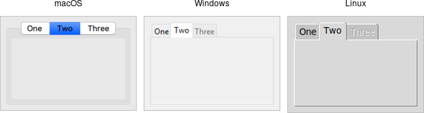

Organizing Complex Interfaces
If you have a complex user interface, you'll need to find ways to organize it that don't overwhelm your users. There are several different approaches to doing this. Both general-purpose and platform-specific human interface guidelines are good resources when designing your user interface.
When we talk about complexity in this chapter, we don't mean the underlying technical complexity of how the program is implemented. Instead, we mean how it's presented to users. A user interface can be pulled together from many different modules, built from hundreds of widgets combined in a deeply nested hierarchy, but that doesn't mean users need to perceive it as complex.
Multiple windows
One benefit of using multiple windows in an application can be to simplify the user interface.
Done well, it can require users to focus only on the contents of one window at a time to complete a task.
Forcing them to focus on or switch between several windows can also have the opposite effect.
Similarly, showing only the widgets relevant to the current task (i.e., via grid) can
help simplify the user interface.
White space
If you do need to display a large number of widgets onscreen at the same time, think about
how to organize them visually. We've seen how grid makes it easy to align
widgets with each other. White space is another useful aid. Place related widgets close
to each other (possibly with an explanatory label immediately above) and separate them from other
widgets by white space. This helps users organize the user interface in their own minds.
The recommended amount of white space around different widgets, between groups of widgets, around borders, etc. is highly platform-specific. While you can do an adequate job without worrying about exact pixel numbers, if you want a highly polished user interface, you'll need to tune this for each platform.
Separator
A second approach to grouping widgets in one display is to place a thin horizontal or vertical rule between groups of widgets; often, this can be more space-efficient than using white space, which may be relevant for a tight display. Tk provides a simple separator widget for this purpose.

Separator widgets.
Separators are created using the ttk.Separator class:
s = ttk.Separator(parent, orient=HORIZONTAL)
The orient option may be specified as either horizontal or vertical.
Label Frames
A labelframe widget, also commonly known as a group box, provides another way to group
related components. It acts like a normal ttk::frame, in that it contains other widgets that you
grid inside it. However, it is visually set off from the rest of the user interface.
You can optionally provide a text label to be displayed outside the labelframe.

Labelframe widgets.
Labelframes are created using the ttk.Labelframe class:
lf = ttk.Labelframe(parent, text='Label')
Paned Windows
A panedwindow widget lets you stack two or more resizable widgets above and below each other (or to the left and right). Users can adjust the relative heights (or widths) of each pane by dragging a sash located between them. Typically the widgets you're adding to a panedwindow will be frames containing many other widgets.

Panedwindow widgets (shown here managing several labelframes).
ttk.Panedwindow class:
p = ttk.Panedwindow(parent, orient=VERTICAL) # two panes, each of which would get widgets gridded into it: f1 = ttk.Labelframe(p, text='Pane1', width=100, height=100) f2 = ttk.Labelframe(p, text='Pane2', width=100, height=100) p.add(f1) p.add(f2)
A panedwindow is either vertical (its panes are stacked vertically on top of each other)
or horizontal. Importantly, each pane you add to the panedwindow must be a
direct child of the panedwindow itself.
Calling the add method adds a new pane at the end of the list of panes. The
insert position subwindow method allows you to place the pane at the given position
in the list of panes (0..n-1). If the pane is already managed by the panedwindow, it will be moved
to the new position. You can use the forget subwindow to remove a pane from the
panedwindow (you can also pass a position instead of a subwindow).
You can assign relative weights to each pane so that if the overall panedwindow resizes, certain panes will be allocated more space than others. As well, you can adjust the position of each sash between items in the panedwindow. See the command reference for details.
Notebook
A notebook widget uses the metaphor of a tabbed notebook to let users switch between one of several pages, using an index tab. Unlike with paned windows, users only see a single page (akin to a pane) at a time.

Notebook widgets.
Notebooks are created using the ttk.Notebook class:
n = ttk.Notebook(parent) f1 = ttk.Frame(n) # first page, which would get widgets gridded into it f2 = ttk.Frame(n) # second page n.add(f1, text='One') n.add(f2, text='Two')
The operations on tabbed notebooks are similar to those on panedwindows. Each page is typically
a frame and again must be a direct child (subwindow) of the notebook itself. A new page and its associated tab are
added after the last tab with the add subwindow ?option value...? method.
The text tab option sets the label on the tab; also useful is the state
tab option, which can have the value normal, disabled (not selectable), or
hidden.
To insert a tab at somewhere other than the end of the list, use the
insert position subwindow ?option value...?, and to remove a given tab, use the forget method,
passing it either the position (0..n-1) or the tab's subwindow. You can retrieve the list of all
subwindows contained in the notebook via the tabs method.
To retrieve the subwindow that is currently selected, call the select method, and change the selected tab by
passing it either the tab's position or the subwindow itself as a parameter.
To change a tab option (like the text label on the tab or its state), you can use the tab(tabid, option=value)
method (where tabid is again the tab's position or subwindow); omit the =value to return the current
value of the option.
Notebook widgets generate a <<NotebookTabChanged>> virtual event whenever a new tab is selected.
Again, there are a variety of less frequently used options and commands detailed in the command reference.